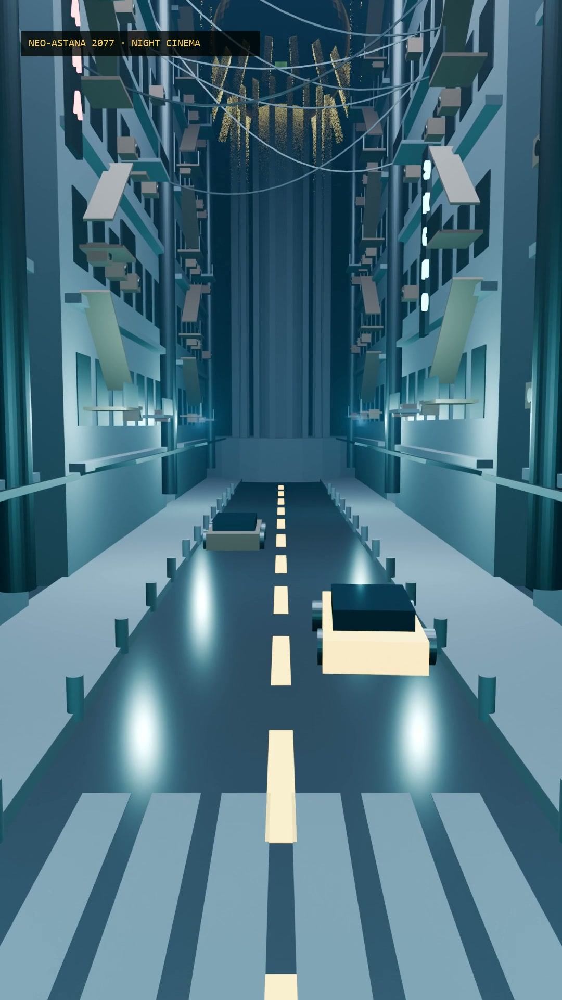

Shot 00 · Galazi Kitbash 1,618
Нео-Астана (Galazi Style)
Высокоплотный уличный каньон будущего с 8-этажными фасадами, лестницами, вентшахтами, кибер-карами и Байтереком в перспективе.
Объекты
1 618 шт
Кабели
22 провода
Стиль
Galazi Reel